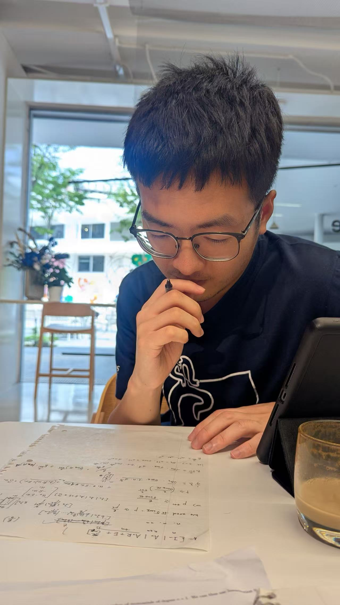

Kaijie Jiang
I am a final-year Ph.D. student in cryptography at Tsinghua University, advised by Prof. Xiaoyun Wang. My research interests are mainly in lattice-based cryptography, especially lattice isomorphism problems and threshold signatures.
I am interested in problems where algebra, lattices, and cryptographic security proofs meet. Recently, my work has focused on lattice-based threshold signatures, the lattice isomorphism problem, and cryptographic constructions from group actions.
Email:
jkj21 AT mails DOT tsinghua DOT edu DOT cn
CryptoDB

Publications
Tweed: Adaptively Secure Lattice-Based Two-Round Threshold Signatures
Eurocrypt 2026.
[ePrint]
Oriole: Adaptively Secure Partially Non-Interactive Threshold Signatures
from Lattices
IACR ePrint 2026/793.
[ePrint]
Re-Randomize and Extract: A Novel Commitment Construction Framework
Based on Group Actions
Eurocrypt 2025.
[ePrint]
Cryptanalysis of Rank-2 Module-LIP with Symplectic Automorphisms
Asiacrypt 2024.
[ePrint]
Exploiting the Symmetry of Zn: Randomization and the
Automorphism Problem
Best Paper
Asiacrypt 2023.
[ePrint]
Research Interests
- Lattice-based cryptography and post-quantum cryptography.
- Lattice isomorphism problems: algorithms, reductions, and complexity.
- Threshold signatures and adaptive security.
- Cryptographic constructions from group actions and isomorphism problems.